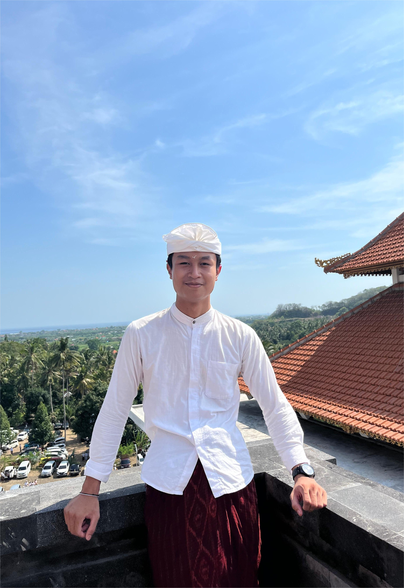
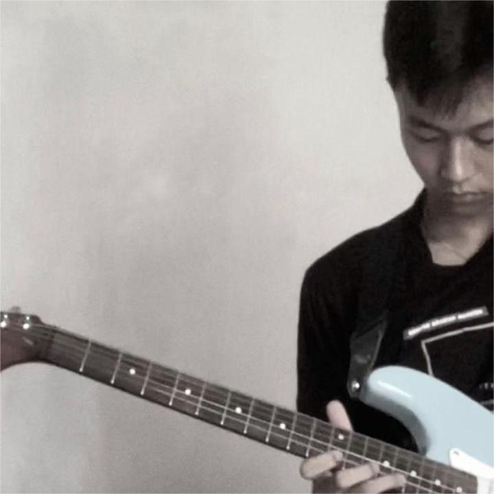
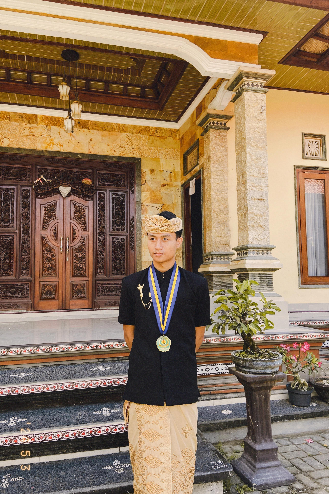

Halo! Saya I Putu Weda Sidhi Putra dengan NIM 2405551164 yang merupakan Mahasiswa Teknologi Informasi, Fakultas Teknik, Universitas Udayana. Saya memiliki minat dalam pengembangan web, analisis data, dan inovasi teknologi digital. Sebagai individu yang selalu berusaha meningkatkan kemampuan, saya berfokus pada pengembangan keterampilan dan pemecahan masalah untuk memberikan solusi kreatif dan bermanfaat.
Hallo its me
I Putu Weda Sidhi Putra
Selamat datang di portfolio saya! Temukan informasi menarik tentang saya di halaman ini.
Kenali Lebih DekatTentang Saya

Hobby

Hobi saya mencakup berbagai hal yang mendukung pengembangan diri dan keseimbangan hidup. Saya menikmati bermain gitar sebagai bentuk ekspresi musikal, mendengarkan musik untuk relaksasi, serta menonton film untuk hiburan dan wawasan baru. Selain itu, saya juga tertarik pada fotografi untuk mengabadikan momen-momen penting, dan berlari sebagai aktivitas untuk menjaga kebugaran fisik serta meredakan stres.
Pendidikan
Saat ini, saya sedang menempuh studi di Fakultas Teknik, Universitas Udayana, dengan fokus di bidang Teknologi Informasi. Di sini, saya belajar banyak hal tentang teknologi terbaru dan bagaimana cara mengaplikasikannya di dunia nyata. Pendidikan yang saya jalani membantu saya untuk terus berkembang, baik secara teknis maupun analitis, agar siap menghadapi berbagai tantangan di masa depan dan berkontribusi dalam dunia teknologi.
Kontak

Email saya di putuputra.24164@student.unud.ac.id untuk pertanyaan, kolaborasi, atau sekadar menyapa dan mengenal lebih dekat tentang saya!